생산자동화기능사 (2014-07-20 기출문제)
1과목: 기계가공법 및 안전관리(대략구분)
1. 연삭숫돌 입자의 종류 중 갈색 알루미나의 기호로 맞는 것은?
- C
- GC
- WA
- A
(정답률: 67%)

2. 밀링머신에서 커터의 지름이 100mm이고, 한 날 당 이송이 0.2mm, 커터의 날수를 8개, 회전수를 400rpm으로 할 때 절삭속도는 약 몇 m/min인가?
- 10
- 56
- 40
- 126
(정답률: 64%)
3. 절삭제의 사용목적이 아닌 것은?
- 칩의 배출작용
- 공작물의 냉각작용
- 절삭부의 윤활작용
- 절삭공구의 마찰작용
(정답률: 76%)
4. 인벌류트 곡선을 그리는 원리를 이용하여 기어를 절삭 하는 방법을 무엇이라 하는가?
- 창성법
- 모형법
- 형판법
- 총형커터에 의한 방법
(정답률: 69%)
5. CNC공작기계의 가공 프로그램의 기호와 그 의미가 잘못 연결된 것은?
- M : 보조기능
- T : 공구기능
- S : 절삭 기능
- F : 이송기능
(정답률: 71%)
6. 보링머신의 크기 표시 방법이 아닌 것은?
- 램의 최대 행정
- 테이블의 크기
- 주축의 지름
- 주축의 이송거리
(정답률: 62%)
7. 초음파 가공에 주로 사용되는 연삭 입자의 재질은?
- 탄화붕소
- 셀락
- 폴리에스터
- 구리합금
(정답률: 57%)
8. 연삭숫돌의 결함 중 떨림의 발생원인이 아닌 것은?
- 연삭숫돌의 평행상태가 불량할 경우
- 숫돌축에 편심이 있을 경우
- 연삭숫돌의 결합도가 너무 클 경우
- 연삭깊이를 적게하고 이송을 빠르게 할 경우
(정답률: 73%)
9. 기차의 바퀴를 주로 가공하는 선반으로 주축대 2개를 마주 세운 구조로 된 특수 선반은?
- 공구 선반
- 크랭크축 선반
- 모방 선반
- 차륜 선반
(정답률: 76%)
10. 빌트업 에지(구성인선)의 발생을 감소시키기 위한 방법으로 틀린 것은?
- 절입 깊이를 작게 한다.
- 공구의 윗면 경사각을 크게 한다.
- 공구의 날끝을 둔하게 한다.
- 윤활성이 좋은 절삭유제를 사용한다.
(정답률: 78%)
2과목: 기계제도(대략구분)
11. 나사의 도시법에 대한 설명으로 틀린 것은?
- 수나사의 바깥지름은 굵은 실선으로 그린다.
- 암나사의 안지름은 굵은 실선으로 그린다.
- 수나사와 암나사의 결합부는 수나사로 그린다.
- 완전 나사부와 불완전 나사의 경계는 가는 실선으로 그린다.
(정답률: 63%)
12. 단면도의 표시방법에서 그림과 같은 단면도의 종류는?
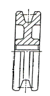
- 온 단면도
- 한쪽 단면도
- 부분 단면도
- 회전 도시 단면도
(정답률: 59%)
13. 제가가공의 지시 방법 중 “ 제거가공을 필요로 한다.”를 지시하는 것은?
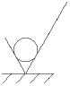
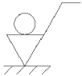
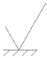
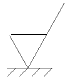
(정답률: 60%)
14. 다음 중 보조 투상도를 사용해야 될 곳으로 가장 적합한 경우는?
- 가공 전, 후의 모양을 투상할 때 사용
- 특정 부분의 형상이 작아 이를 확대하여 자세하게 나타낼 때 사용
- 물체 경사면의 실형을 나타낼 때 사용
- 물체에 대한 단면을 90도 회전하여 나타낼 때 사용
(정답률: 52%)
15. 개개의 치수에 주어진 치수 공차가 축차로 누적되어도 좋은 경우에 사용하는 치수의 배치법은?
- 직렬 치수 기입법
- 병렬 치수 기입법
- 좌표 치수 기입법
- 누진 치수 기입법
(정답률: 49%)
16. 다음 중 데이텀 표적에 대한 설명으로 틀린 것은?
- 데이텀 표적은 가로선으로 2개 구분한 원형의 테두리에 의해 도시한다.
- 데이텀 표적이 점일 때는 해당 위치에 굵은 실선으로 X표시를 한다.
- 데이텀 표적이 선일 때는 굵은 실선으로 표시한 2개의 X 표시를 굵은 실선으로 연결한다.
- 데이텀 표적이 영역일 때는 원칙적으로 가는 2점 쇄선으로 그 영역을 둘러싸고 해칭을 한다.
(정답률: 53%)
17. 호칭번호 6303 ZNR 인 베어링에서 안지름의 치수는 몇 mm인가?
- 15mm
- 17mm
- 30mm
- 63mm
(정답률: 63%)
18. 그림과 같은 입체도의 화살표 방향 투상도로 가장 적합 한 것은?
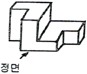
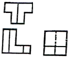
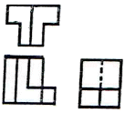
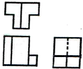
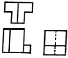
(정답률: 90%)
19. 굵은 1점 쇄선을 사용하는 선으로 가장 적합한 것은?
- 되풀이하는 도형의 피치를 나타내는 기준선
- 수면, 유면 등의 위치를 표시하는 선
- 표면처리 부분을 표시하는 특수 지정선
- 치수선을 긋기 위하여 도형에서 인출해낸 선
(정답률: 72%)
20. 축과 구멍의 끼워 맞춤에서 최대 틈새는?
- 구멍의 최대 허용치수 - 축의 최소 허용 치수
- 구멍의 최소 허용치수 - 축의 최대 허용 치수
- 축의 최대 허용치수 - 구멍의 최소 허용 치수
- 구멍의 최소 허용치수 - 구멍의 최대 허용 치수
(정답률: 74%)
21. 지름 2cm 인 유압 실린더의 16kgf의 힘이 가해져 있을 때 그 압력은 약 얼마인가? (단, 소수점 2째 자리에서 반올림. 1kgf/cm2 = 1bar, π=3.14 이다.)
- 16 kgf/cm2
- 12 bar
- 10 kgf/cm2
- 5.1 bar
(정답률: 52%)
22. 다음 중 캐비테이션(공동현상)의 발생 원인이 아닌 것은?
- 흡입 필터가 막히거나 급격히 유로를 차단한 경우
- 흡입관로 및 스트레이너의 저항 등에 의한 압력 손실이 있을 경우
- 과부하이거나 오일이 점도가 클 경우
- 펌프의 정격속도 이하로 저속 회전시킬 경우
(정답률: 72%)
23. 피스톤의 전진 및 후진 시 동일한 크기의 힘을 얻을 수 있는 실린더는?
- 단동 실린더
- 양로드 복동 실린더
- 탠덤 실린더
- 쿠션 내장형 실린더
(정답률: 83%)
24. 다음 중 오일 탱크의 구비 조건으로 틀린 것은?
- 스트레이너의 유량은 유압 펌프 토출량과 같을 것
- 오일 탱크의 크기는 적어도 펌프 토출량의 3배 이상일 것
- 공기나 이물질을 오일로부터 분리할 수 있을 것
- 공기청정기의 통기용량은 유압 펌프 토출량의 2배 이상일 것
(정답률: 57%)
25. 피스톤 펌프의 특징에 대한 설명으로 틀린 것은?
- 다른 유압 펌프에 비해 효율이 낮은 편이다.
- 토출 압력이 높다.
- 구조가 복잡하고 가격이 고가이다.
- 가변용량형 펌프로 많이 사용된다.
(정답률: 56%)
26. 공압의 특징을 설명한 것으로 틀린 것은?
- 작동,유체가 압축정이므로 에너지 축적이 용이하다.
- 서지압력이 방생되므로 과부하에 대한 안전 대책이 용이하지 못하다.
- 취급에 있어 안전하다.
- 압력 조정에 따라 출력을 단계적 또는 무단으로 변경할 수 있다.
(정답률: 63%)
27. 유압 회로 내에서 압력을 일정하게 유지하도록 하는 밸브는?
- 릴리프밸브
- 교축밸브
- 체크밸브
- 방향제어밸브
(정답률: 77%)
28. 어큐뮬레이터(accumulator)의 용도가 아닌 것은?
- 에너지 축적
- 이물질 여과
- 펌프의 맥동 흡수
- 충격압력의 완충
(정답률: 67%)
29. 공기압 실린더의 부착형식이 아닌 것은?
- 풋(Foot)형
- 플랜지형
- 피벗형
- 용접형
(정답률: 64%)
30. 공기압 조정 유닛(서비스유닛)에 포함되지 않는 공압기기는?
- 공기건조기
- 압력 조절 밸브
- 에어필터
- 윤활기
(정답률: 45%)
3과목: 메카트로닉스 일반(대략구분)
31. 스트레인 게이지를 이용하여 만들 수 있는 센서는?
- 유도형센서
- 광전 센서
- 압력센서
- 용량형 센서
(정답률: 47%)
32. 다음과 같은 시퀀스 회로의 명칭은? (단, T1, T2 는 타이머이고 R은 릴레이이다.)
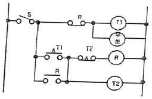
- 인터록회로
- 지연동작회로
- 일정시간동작회로
- 반복동작회로
(정답률: 39%)
33. 다음 센서 중 p형 반도체와 n형 반도체의 접합부에서 발생하는 광기전력 효과를 이용한 센서는?
- 광전형 센서
- 유도형 센서
- 정전용량형 센서
- 압전형 센서
(정답률: 73%)
34. 논리식
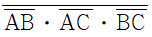
를 드 모르간 정리에 의해 변화하면?- AB2+AC2+BC
- AB+AC+BC
- ABㆍACㆍBC
- AㆍBㆍC
(정답률: 62%)
35. 타이머에 전원이 투입되면 순간적으로 접점이 열리고 전원을 제거하면 일정시간 경과 후에 닫히는 접점을 무엇이라 하는가?
- 순시복귀 a점점
- 순시복귀 b점점
- 한시복귀 a접점
- 한시복귀 b접점
(정답률: 63%)
36. 접점부의 회전동작에 의해서 접점을 변환하는 스위치는?
- 슬라이드 스위치
- 파형 스위치
- 트리거 스위치
- 로터리 스위치
(정답률: 74%)
37. 그림에서 전열기의 발열량에 는 관계없이 스위치를 개폐하여 전류를 흐르게 하거나 차단시키는 두 동작가운데 어느 한 동작에 의해 제어명령이 내려지는 제어는?
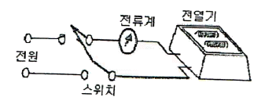
- 정량적제어
- 정성적제어
- 되먹임 제어
- 자동조정 제어
(정답률: 59%)
38. 로봇의 구동요소 중에서 피드백 신호 없이 구동축의 정밀한 위치제어가 가능한 것은?
- 스테핑 모터
- AC 서보모터
- DC 서보모터
- 서보유압 구동장치
(정답률: 66%)
39. 전자 유도원리를 이용한 유도형 근접센서는 어느 물체를 감지 할 수 있는 센서 인가?
- 유리
- 나무
- 금속
- 플라스틱
(정답률: 83%)
40. 공장에서 물품을 수주부터 물품을 출하하기까지의 모든 기능을 효율적으로 이용하기 위한 자동화 기술을 의미하는 것은?
- FA
- HA
- BA
- DNC
(정답률: 68%)
41. 다음 중 성격이 다른 자동제어는?
- 되먹임 제어
- 피드백 제어
- 개방 제어
- 닫힌 루프계 제어
(정답률: 70%)
42. 일반적으로 PLC제어와 릴레이제어이 특정을 비교 설명한 것으로 틀린 것은?
- PLC제어는 릴레이제어보다 제어 로직의 변경이 어렵다.
- PLC제어는 릴레이제어보다 제어반의 크기가 작다.
- PLC제어는 릴레이제어보다 고속 동작이 가능하다.
- PLC제어는 릴레이제어보다 시스템 구성시간이 짧다.
(정답률: 72%)
43. 제어의 정의에 대한 설명 중 가장 바르지 못한 것은?
- 적은 에너지로 큰 에너지를 조절하기 위한 시스템을 말한다.
- 사람이 직접 개입하여 어떤 작업을 수행하는 것 등을 뜻한다.
- 어떤 목적에 적합하도록 되어 있는 대상에 필요한 조작을 가하는 것이다.
- 기계의 재료나 에너지의 유동을 중계하는 것으로써 수동이 아닌 것이다.
(정답률: 59%)
44. 다음 중 생산 공정이나 기계장치 등을 자동제어시스템으로 바꾸었을 때의 장점과 가장 거리가 먼 것은?
- 생산 속도를 증가시킨다.
- 제품의 품질이 균일화되고 향상되어 불량품이 감소된다.
- 생산 설비의 수명이 길어진다.
- 설비 투자비가 감소된다.
(정답률: 81%)
45. 컴퓨터를 이용하여 설계, 제도에서 생산까지 일관하는 시스템은?
- 검사 시스템
- 베이스머신 시스템
- 치공구 시스템
- CAD/CAM 시스템
(정답률: 85%)
46. 자기유지회로를 구성할 때 ( )에 알맞은 기호는?
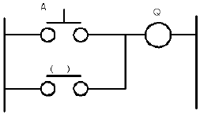
- A
- Q
- A'
- Q'
(정답률: 72%)
47. 그림 중 NAND 소자를 나타내는 논리 소자는?
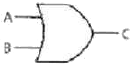
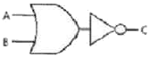
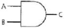
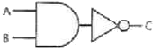
(정답률: 82%)
48. 유접점 회로와 비교했을 때 무접점 회로의 특징으로 가장 거리가 먼 것은?
- 수명이 길다.
- 응답속도가 느리다.
- 소형화에 적합하다.
- 전기적 노이즈에 약하다.
(정답률: 73%)
49. 열동계전기에 관한 설명으로 옳지 않은 것은?
- 복구는 수동 복구형과 자동 복구형이 있다.
- 바이메탈의 팽창과 수축력에 의해 동작한다.
- 전류가 정상전류보다 크게 증가하면 동작한다.
- 경보회로만 작동하고 주회로는 차단하지 않는다.
(정답률: 69%)
50. 시퀀스 제어용 기기 중 설정시간 만큼 동작을 지연시키기 위하여 사용하는 것은?
- 카운터
- 전자접촉기
- 타이머
- 솔레노이드밸브
(정답률: 86%)
51. 유도형전동기의 속도제어 방법으로 가장 적합한 것은?
- 콘덴서법
- 극수변환법
- 저항조정법
- 트랜지스터법
(정답률: 51%)
52. 전자개폐기를 구성하는 조합으로 옳은 것은?
- 릴레이와 타이머
- 전자접촉기와 타이머
- 열동형계전기와 타이머
- 전자접촉기와 열동형계전기
(정답률: 72%)
53. 제어계의 종류를 목표값에 따른 분류와 제어량에 따른 분류로 구분할 때, 목표값에 따른 분류에 해당하는 것은?
- 서보기구
- 정치제어
- 자동조정
- 프로세스 제어
(정답률: 48%)
54. 입력신호가 가해지고 있는 상태에서 클록 펄스가 들어가면 펄스 1개 정도가 뒤져서 출력되는 플립플롭은?
- D-플립플롭
- RS-플립플롭
- T-플립플롭
- JK-플립플롭
(정답률: 54%)
55. 제어계에서 동작의 관련성 및 작업의 순서를 나타낸 것은?
- 접속도
- 플로우차트
- 논리회로도
- 타이밍차트
(정답률: 56%)
56. 그림은 어떤 회로를 나타낸 것인가?
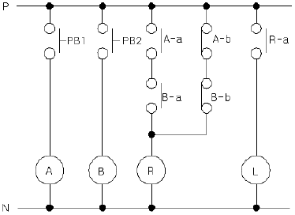
- 일치회로
- 인터록회로
- 금지회로
- 배타적 OR회로
(정답률: 61%)
57. 입력신호가 하이(High) 이면 출력은 로우(Low)이고, 입력신호가 로우(Low)이면 출력이 하이(High)가 나오는 논리회로는?
- AND
- OR
- NOT
- NAND
(정답률: 78%)
58. 전동기의 스타-델타 기동회로 등에서 다른 계전기의 동시작동을 금지시키는 회로는?
- 인터록 회로
- 기동 우선 기억 회로
- 신입력 우선 회로
- 정지 우선 기억 회로
(정답률: 77%)
59. 다음 중 논리식이 틀린 것은?
- A+AㆍB=B
- Aㆍ(A+B)=A
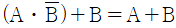
- (A+B)+C=A+(B+C)
(정답률: 51%)
60. 다음 표시등 기호와 색상을 연결한 것 중 적합하지 않은 것은?
- BL- 청색표시등
- RL-적색표시등
- GL-녹색표시등
- OL-황색표시등
(정답률: 80%)